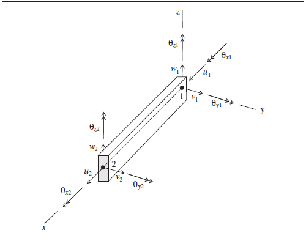
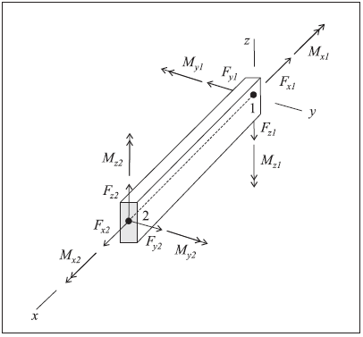
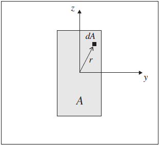

梁结构单元
力学行为
各梁结构单元由其几何与材料性质定义。梁单元假定为位于两节点之间、具有均匀双对称截面性质的直线段。任意弯曲的结构梁可建模为由梁单元集合构成的曲线结构。默认情况下各梁单元表现为各向同性线弹性材料且无破坏限值；不过可指定极限塑性弯矩，或在梁单元之间引入塑性铰位置（该处转动可出现不连续）（见 梁结构中塑性铰的形成（Plastic Hinge Formation in a Beam Structure））。各梁单元所用有限单元的一般性质见 梁有限单元（Beam Finite Element）。梁单元适用于模拟横向剪切变形与截面平面外（纵向）翘曲引起的位移可忽略的结构梁。
与所有结构单元一样（且不同于网格单元），单个单元由其 component-id 号标识。梁的集合由 id 号标识。单个结构节点与连接也由 component-id 号标识。节点与连接还可按其所属单元的 id 号选择。
各梁单元都有各自的局部坐标系，如 图 1（Figure 1） 所示。该系用于指定截面惯性矩与所施加的均布荷载，也用于定义构成单根梁的各梁单元上力与力矩分布的符号约定（见 图 2（Figure 2））。梁单元坐标系由其两个节点位置（图 1（Figure 1） 中标为 1 与 2）以及向量 \(\bf Y\) 定义。梁单元坐标系的定义使
- 形心轴与 \(x\) 轴重合，
- \(x\) 轴由节点 1 指向节点 2，且
- \(y\) 轴与 \(\bf Y\) 在横截面平面（即法向沿 \(x\) 轴的平面）上的投影对齐。

图 1：梁单元坐标系与梁有限单元的 12 个活动自由度

图 2：梁单元端部力与力矩的符号约定（坐标轴表示梁单元坐标系，端 1 与端 2 对应节点连接列表中的顺序，所有量均按正方向绘出。）
梁单元坐标系可用 设置梁单元 y 向方向属性命令（structure beam property direction-y） 命令修改。（若未指定 \(\bf Y\)，或它与局部 \(x\) 轴平行，则 \(\bf Y\) 默认为全局 \(y\) 或 \(x\) 方向中与局部 \(x\) 轴不平行的那个。）梁单元坐标系可用 Beam 绘图项查看，并用 列出梁单元局部坐标系命令（structure beam list system-local） 命令打印。节点连接关系可用 列出梁单元信息命令（structure beam list information） 命令打印。
梁有限单元的 12 个活动自由度示于 图 1（Figure 1）。图中每个广义位移（平动与转动）都对应一个广义力（力与力矩）。梁有限单元的刚度矩阵在每个节点包含全部六个自由度，以表示梁结构中的轴向、剪切与弯曲作用。
响应量
梁的响应包括作用于各梁单元端部的力与力矩向量。这些量可用全局系或梁单元坐标系表示。梁的响应可通过 FISH 访问，并用
- 用
structure beam list命令并配合后续关键字 force-node 或 force-end 打印， - 用
structure beam history命令监测，以及 - 用 Beam 绘图项可视化。
图 2（Figure 2） 中的符号约定为构成单根梁的各梁单元上的力与力矩分布给出连续描述。它假定构成该梁的梁单元集合方向一致，使其局部坐标系对梁的方位构成连续描述。若梁是用 structure beam create 命令创建的，情况正是如此。如此创建的每个梁单元的节点排序使梁的整体方向从所指定的第一个点指向第二个点。节点连接关系可用 列出梁单元信息命令（structure beam list information） 命令打印。
属性
各梁单元具有 12 个性质：
- density，质量密度，\(\rho\)（可选——动力模式或重力启用时需要）[M/L3]
- young，杨氏模量 \(E\)［F/L2］
- poisson, Poisson’s ratio, \(\nu\)
- plastic-moment，Y 与 Z 方向的塑性弯矩承载力，\(M^P\)（可选——若未指定，则假定 \(M^P\) 为无穷大）[F\(\cdot\)L]。若已分别指定 Y 与 Z 方向的塑性弯矩，则该值为其中较大者。赋值时该值被同时赋予 y 与 z 两个分量。
- plastic-moment-y，仅 Y 方向的塑性弯矩承载力，\(M^P\)（可选——若未指定，则假定 \(M^P\) 为无穷大）[F\(\cdot\)L]
- plastic-moment-z，仅 Z 方向的塑性弯矩承载力，\(M^P\)（可选——若未指定，则假定 \(M^P\) 为无穷大）[F\(\cdot\)L]
- thermal-expansion，热膨胀系数 \(\alpha_t [1/T]\)（可选——用于热学分析）
- cross-sectional-area，截面积 \(A\)［L2］
- moi-y，关于梁单元 \(y\) 轴的二次矩；\(I_y\) [L4]
- moi-z，关于梁单元 \(z\) 轴的二次矩；\(I_z\) [L4]
- moi-polar，极惯性矩，\(J\) [L4]
- direction-y，向量 \(\bf Y\)，其在梁单元横截面上的投影定义单元 \(y\) 轴（可选——若未指定，则 \(\bf Y\) 默认为全局 \(y\) 或 \(x\) 方向中与单元 \(x\) 轴不平行的那个）
材料行为由性质 1-5 描述，截面几何由性质 6-10 描述。对 图 3（Figure 3） 所示的一般梁单元截面，极惯性矩 \(J\) 与二次矩 \(I_y\)、\(I_z\) 在单元坐标系 \(xyz\) 中由以下积分定义
其中横截面的两个主轴由梁单元的 \(y\) 轴与 \(z\) 轴定义。

图 3：单元 yz 平面中的一般梁单元横截面
梁的性质易于计算，或可查手册获得。例如结构钢的典型值为杨氏模量 200 GPa、泊松比 0.3。混凝土的典型值为杨氏模量 25 到 35 GPa、泊松比 0.15 到 0.2、质量密度 2100 到 2400 kg/m3。钢筋混凝土之类组合体系应按换算截面计算。
若指定塑性弯矩，可按如下方式计算其值。考虑宽度为 \(b\)、高度为 \(h\) 的受弯构件。若构件材料为理想弹塑性，则可计算弹性与塑性抵抗弯矩。在外缘纤维中产生屈服应力 \(\sigma_y\) 所需的弯矩定义为弹性弯矩 \(M^E\)，按下式计算
要使整个截面屈服，屈服应力必须作用于整个截面，且截面一半上合力的位置距中性面必须为 \(h/4\)。抵抗弯矩即塑性弯矩 \(M^P\) 为
达到 \(M^P\) 后，发生塑性弯矩的截面可继续变形而不产生附加抗力。塑性弯矩承载力限制每个梁单元所承受的内部弯矩。
为限制梁单元之间传递的弯矩，还必须限制节点处的弯矩承载力。以极限抵抗弯矩继续变形、从而在转动运动中出现不连续的状态称为塑性铰。可通过在每个铰位置创建双节点、在这些节点之间添加节点-节点连接并指定适当的连接附着条件来定义潜在塑性铰位置。若由这种塑性铰双节点相连的梁单元达到极限弯矩，则转动运动中将出现不连续。用单节点与双节点建模塑性铰的示例应用见 梁结构中塑性铰的形成（Plastic Hinge Formation in a Beam Structure）。
上述讨论假定截面关于中性轴对称。不过若截面不对称（例如 T 形截面），或拉压的应力-应变关系差别明显（例如钢筋混凝土），中性轴会偏离先屈服的纤维，必须先重新定位中性轴才能计算抵抗弯矩。中性轴可通过沿截面积分应力分布并求解应力为零的轴位置求得。有些情形下该积分可表示为一个未知量的方程（此时求解可能并不困难）。但若材料的应力-应变关系不像理想弹塑性图，求解可能需多次试算。几乎所有钢筋混凝土或钢结构设计教材都给出计算塑性弯矩的方法与算例。
程序中当前的表述假定梁单元在达到塑性弯矩之前保持弹性。该假定对对称轧制钢截面大体成立，因为 \(M^P\) 与 \(M^E\) 差别不大。但对钢筋混凝土，塑性弯矩可能比弹性弯矩大一个数量级。
工程应用算例
下面给出若干简单示例以说明梁的用法。
- 教程：竖向开挖的支撑支护（Tutorial: Braced Support of a Vertical Excavation）
- 简支梁 — 两个相等集中荷载 — 梁单元（Simple Beam — Two Equal Concentrated Loads — Beam Elements）
- 自由端施加弯矩的悬臂梁 — 梁单元（Cantilever Beam with Applied Moment at Tip — Beam Elements）
- 轴向受载梁的屈曲（Buckling of an Axially Loaded Beam）
- 梁结构中塑性铰的形成（Plastic Hinge Formation in a Beam Structure）
使用梁单元的全部示例清单见 结构梁示例（Structural Beam Examples）。
Commands & FISH
| 这些内容对您有帮助吗？… | FLAC3D © 2019, Itasca | 原文更新于 2020 年 10 月 8 日 |